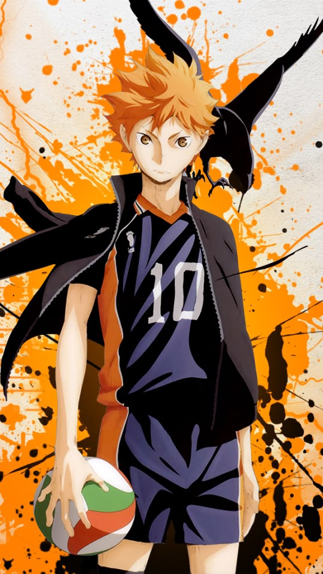

Haikyuu!! é uma popular série de mangá e anime sobre vôlei que acompanha a jornada de Shoyo Hinata, um estudante determinado a se tornar um grande jogador apesar de sua baixa estatura.

Personagens Principais

Nishinoya

Hinata

Kuroo
Arcor Favoritos
Arco intercolegial

Arco das Preliminares de Primavera